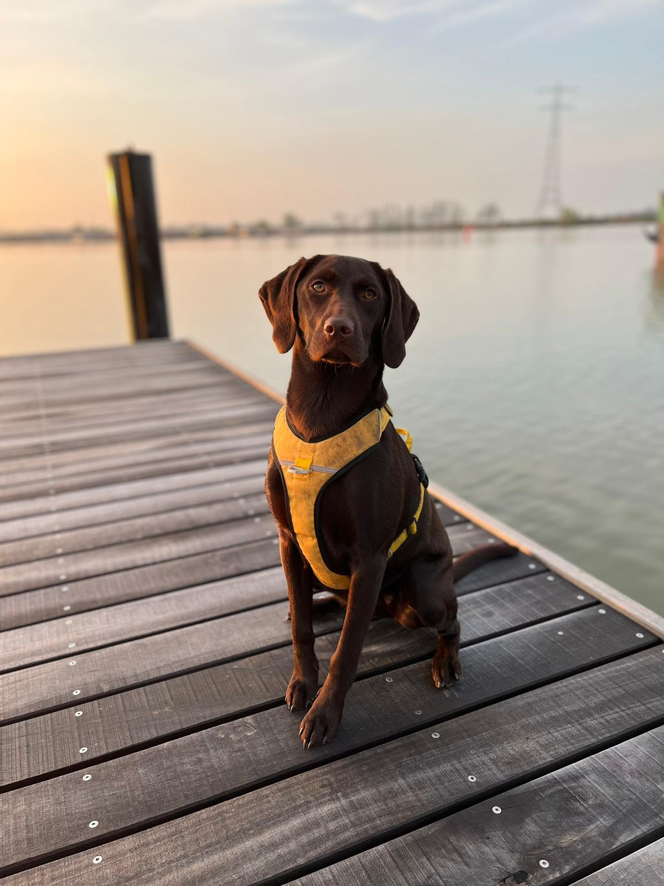
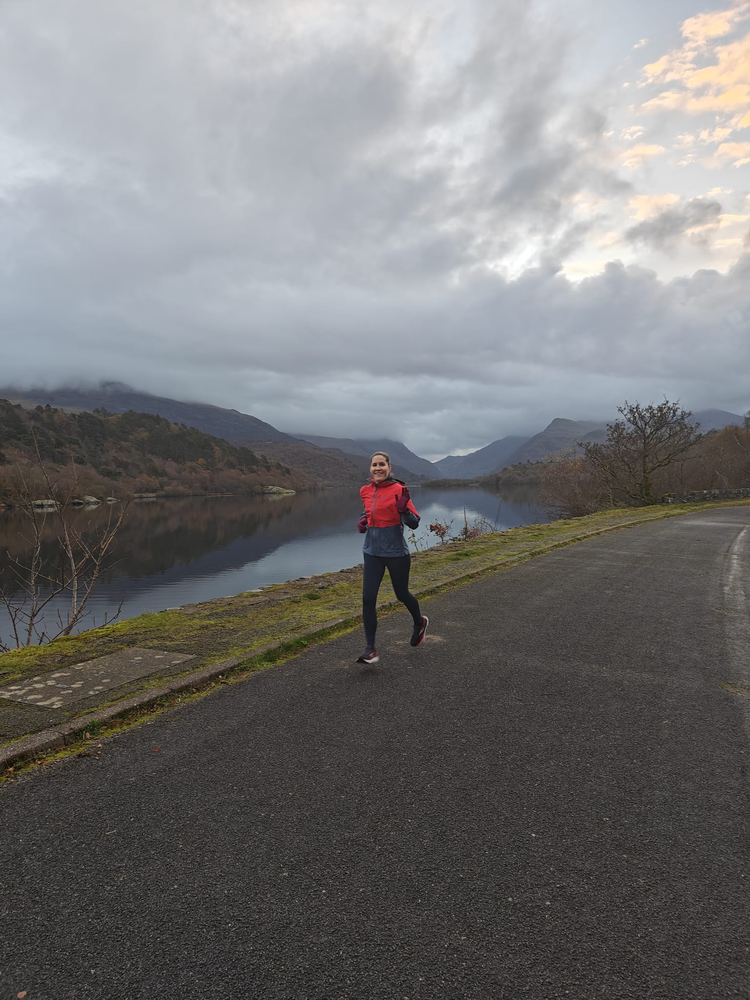
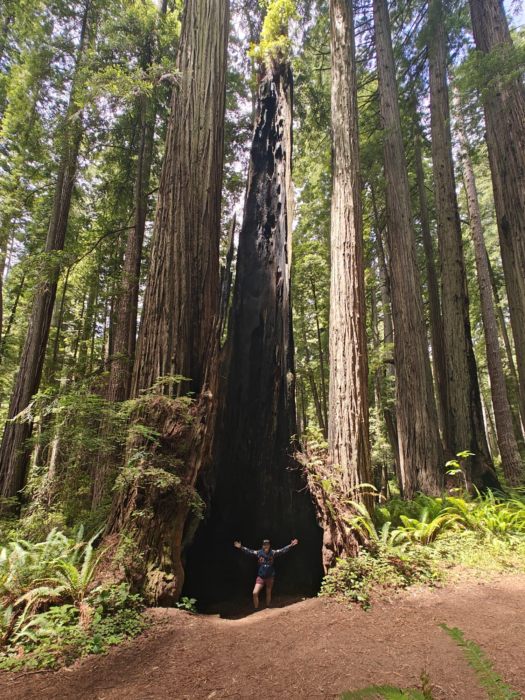
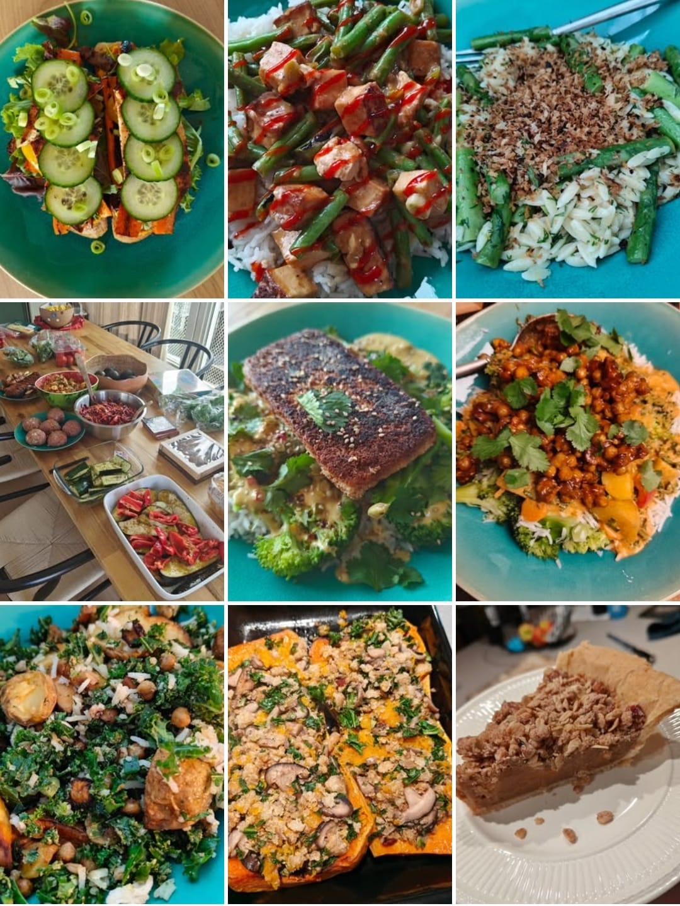
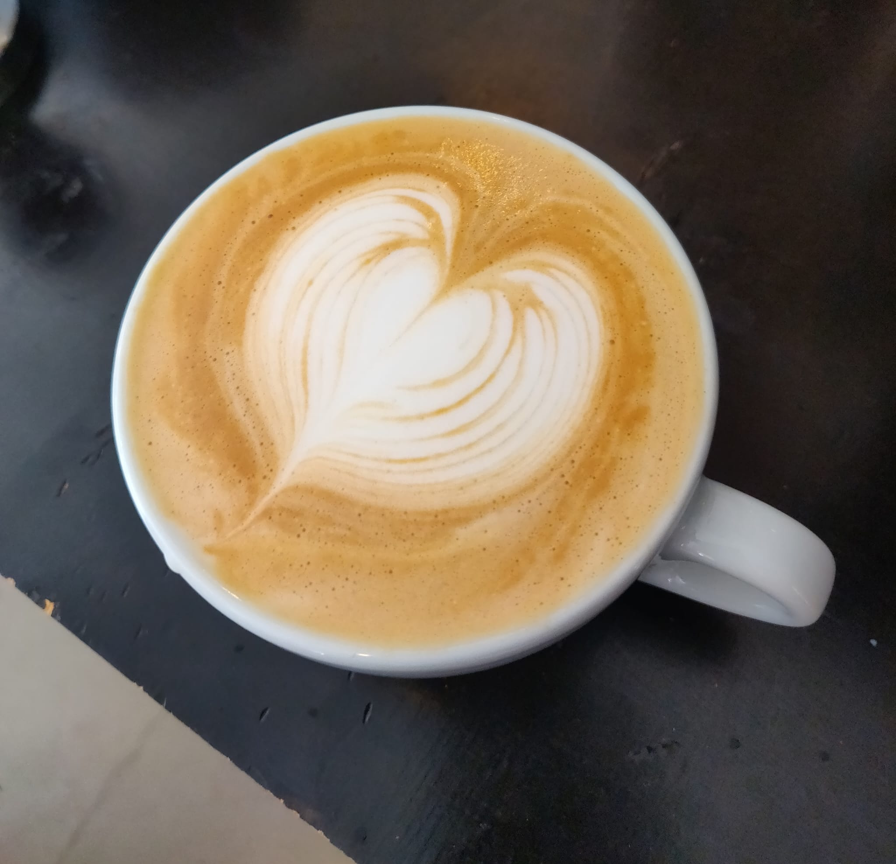

About
I’m Kylie, an Atlanta-native (technically Decatur), crazy dog lady, runner, and science nerd. I work as an infectious disease modeller, meaning that I use math, stats, and R to study the spread of diseases and how interventions, like vaccines, can impact that spread. My career path has taken me from Atlanta to London, Amsterdam, Hong Kong, and soon to Melbourne. I love to explore both near and far, whether that’s through research collaborations, weekend hikes, discovering local coffee shops, or finding the best running trails in each new city.
Scroll through my journey below and watch it unfold on the map.
My Journey
🎓 PhD
2011-2018
I did my PhD at Emory University in Atlanta, GA. Georgia will always be home, but the world was calling!
🇬🇧 Postdoc
2018-2020
Moved to London for a postdoc at Imperial College London.
🇳🇱 Senior Researcher
2020-2025
During the pandemic, I relocated to Amsterdam and joined the RIVM as a senior researcher in infectious disease modelling. Found my niche in modelling for public health policy.
🇭🇰 Honorary Assistant Professor
2022-Present
Joined University of Hong Kong School of Public Health as Honorary Assistant Professor, expanding international research collaborations and working on real-world vaccine effectiveness.
🇦🇺 Modelling for Policy Lead
2025-Present
Started a new position at the Peter Doherty Institute for Infectious and Immunity at the University of Melbourne in October 2025! 🦘
Quick Stats
15,096.7
Kilometers Run
37
Countries Visited
100
Google Scholar Publications
17,124
Total Citations
25
Books Read This Year
4
Daily dog walks with Leon
Life Outside of Research
 Leon - My pretty princess 👑
 Running - Still my favorite way to explore
 Hiking - Redwoods National & State Parks
 Cooking - Food adventures on Instagram
 Coffee - Perfecting my homemade flat white (my latte art needs work) 🙃
I continue to find any excuse to hop on a plane, train, or automobile and explore new places. Whether it’s for research collaborations, conferences, or just weekend adventures, I believe that travel enriches both personal and professional perspectives. With an upcoming move to Melbourne on the horizon, the adventure continues!
Want to connect? Find me on social media or drop me an email - I’m always happy to chat about research, travel recommendations, the perfect flat white recipe, or tips for international moves!